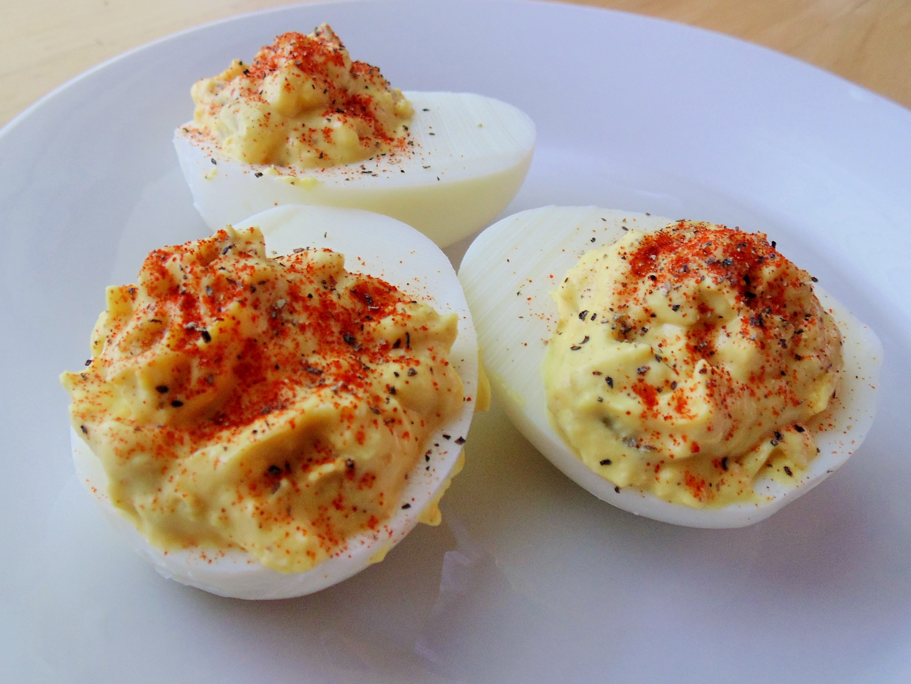

Deviled eggs!

A deviled eggs recipe that will fit in just perfectly with our pulled pork recipe!
Deviled eggs are a staple in many barbeques and small luncheons and with these, you'll never have to worry about leftovers again!
Ingredients
- 6 eggs
- ¼ cup mayonnaise
- 2 tablespoons finely chopped onion
- 3 tablespoons sweet pickle relish
- 1 tablespoon prepared horseradish
- 1 tablespoon prepared mustard
- paprika for garnish
- salt and pepper to taste
Once you have gathered all your ingredients, lets get started!
- Place eggs in a medium saucepan and cover with cold water. Bring the water to a boil and immediately remove fromt heat.
Cover and let eggs stand in hot water for 10-12 minutes. Remove and cool eggs. Peel then cut lengthwise.
- Remove yolk from eggs and in a medium bowl mash the yolks, and mix together with mayonnaise, onion, sweet pickle relish, horseradish and mustard.
- With a pastry bag or fork, fill the egg halves with the yolk mix. Garnish with paprika then salt and pepper to taste. Chill until serving!
Return to Main Page